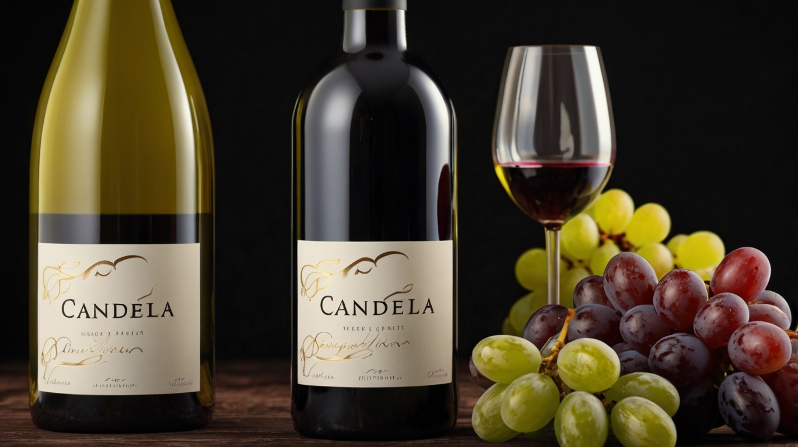
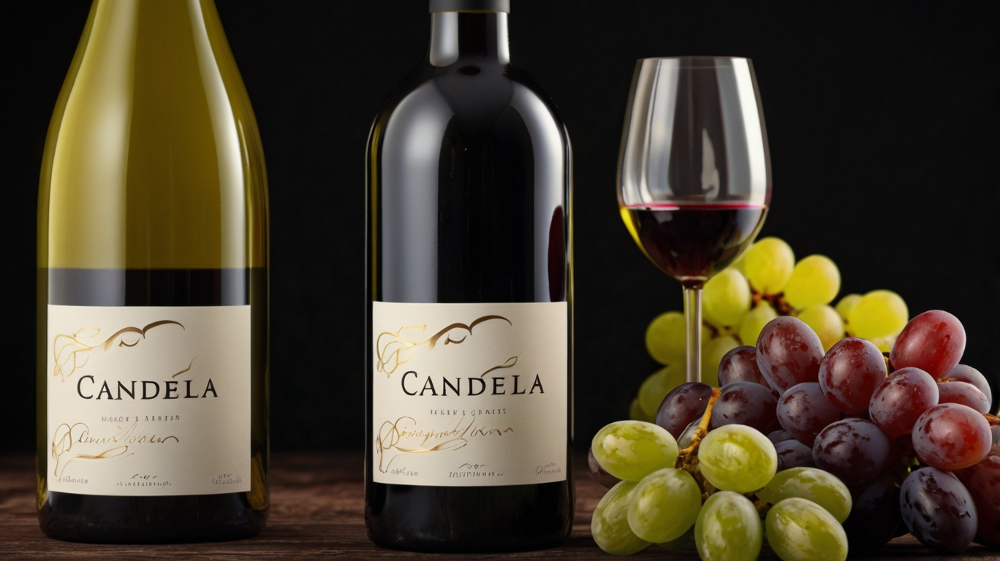

Bodega y Viñedos Candela S.A.C. continúa con una tradición familiar en una tierra que ha mantenido durante décadas un estrecho vínculo con el vino y la vida.
Pasaje Piedras del Sol 1549 Urb. Inca Manco Capac San Juan de Lurigancho
982671847
En Candela cada botella es un testimonio de nuestro compromiso con la calidad, utilizando métodos tradicionales y una fórmula secreta que se transmite de generación en generación
Nuestros vinos ofrecen una complejidad única. Notas de fruta madura, especias y minerales se entrelazan en un baile delicado, revelando la profundidad de la tierra y la maestría del enólogo.

Si eres nuevo en el mundo del vino, Candela te abre las puertas a un universo de sabores. Te invitamos a explorar nuestras variedades, desde los tintos robustos hasta los blancos frescos y aromáticos.
No dudes en acercarte a nosotros para aprender más sobre el proceso de elaboración, las características de cada variedad y la magia que se esconde detrás de cada etiqueta.